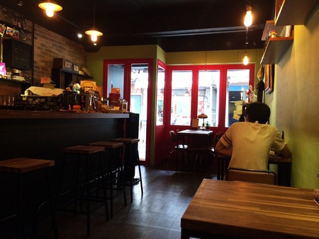
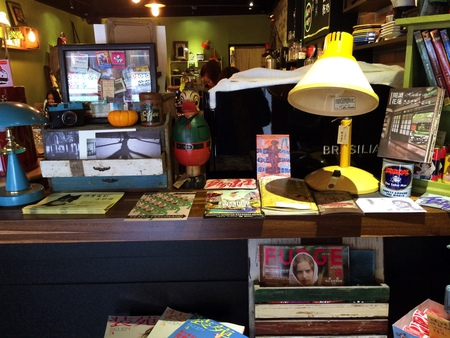
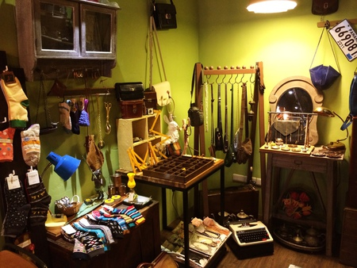
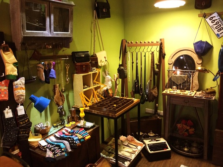
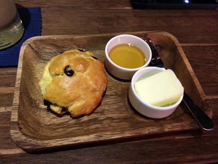
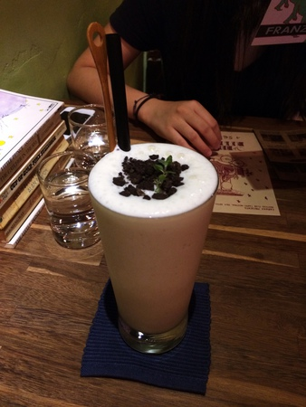
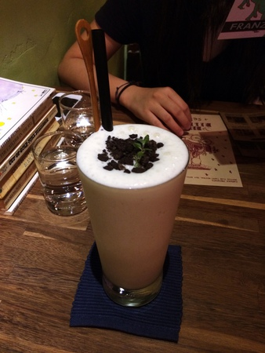

政大附近的古董風老薑咖啡廳 Old Ginger Cafe
今年暑假左右剛開幕的一家Vintage風咖啡廳在政大附近開幕了！雖然就離我很近很想拜訪一下但遲遲沒有時間，終於挑到一個週末的空檔可以去玩玩啦!!這家「老薑咖啡 Old Ginger Cafe」就在指南路上，從政大校門口往貓空方向沿著指南路上一直走，約莫五分鐘就可以抵達了，坐落於711的旁邊。

古董愛好者的天堂
一進門的地方擺了很多古董的小物，像是一些兒時記憶中的小零食糖果罐、還有陳列一些樂團表演的酷卡。當然，這種古董風格的店也少不了陳列一些底片相機囉！在老薑咖啡的最裡面有一區是在賣一些古董裝飾品以及可愛的帽子襪子等等，單價屬中等偏高一點，但是對於一些復古控、古著控來說，這裡真的是天堂啊，非常的好逛！！

 

能夠讓人完全放鬆的舒適空間
吧檯有一個冰淇淋的口味的告示牌，瓶瓶罐罐整齊的擺著，配上咖啡磚牆和木製高腳椅，讓人覺得很明亮舒適又很有質感！在每張桌上都擺有一組餐具，比較令人驚喜的是旁邊還有一些英文的小說，所以閒暇之餘來到老薑咖啡也不怕沒事做！逛逛復古小市集再念一念原文小說——一個悠哉下午get！

來份飲品以及清爽簡餐吧！
這邊的餐飲主要是以飲品為主，咖啡、茶類、果汁應有盡有，如果是想要吃偏向正餐的話只有三種選擇，主要也是麵包+沙拉的這種輕食組合，想要吃小餐點的話也有Scone(英式司康)可以選擇，Scone的麵包有多種口味可以選擇，蜂蜜是隨Scone附上的，如果要加奶油的話則要再加價$10，因為我是Scone迷所以時常到處尋覓、吃過很多餐廳的Scone，而我覺得老薑的Scone size剛剛好、不會大的讓人覺得難以入口，卻也不會小的吃完空虛軟硬度也適中，不會過甜過膩，所以我蠻喜歡他們家的Scone，之後有機會再試試看其他口味的！而麵包+沙拉的餐點我覺得份量適合想要吃點東西卻沒那麼餓、又想要澱粉醣類維生素通通具備的人！還有附一杯爽口的小飲，喝起來像是王品集團在上主餐之前會送上的那一小杯爽口飲料，是一份清爽的一餐。

 

讓自己在這邊閒適一個下午是一件很輕鬆宜人的一件事，除了餐點飲料推薦以外，這家小店的氣氛也非常不錯，既可以進食又可以逛街外加像文青一樣攬一本原文書來看，一舉三得！是不是聽起來很棒呢？是一個值得二訪的咖啡廳喔！